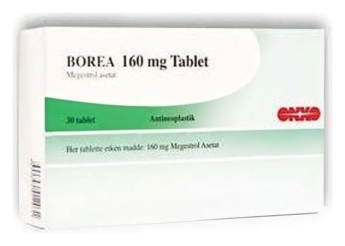

Borea 160 mg Tablet, 30 Adet

Ne için kullanılır
KT · Bölüm 1BOREA 160 mg tablet her biri etkin madde olarak 160 mg megestrol asetat içeren, beyaz renkte, oval, kırma çentikli düz oral kullanımlık tablet şeklindedir.
BOREA 160 mg tablet, 30 tabletlik formları ile kullanıma sunulmaktadır.
BOREA progesteronlar olarak adlandırılan bir ilaç grubuna dahildir.
BOREA, ilerlemiş meme kanserinin yatıştırıcı tedavisinde ve ayrıca kansere bağlı iştahsızlık ya da kilo kaybı tedavisinde kullanılır.